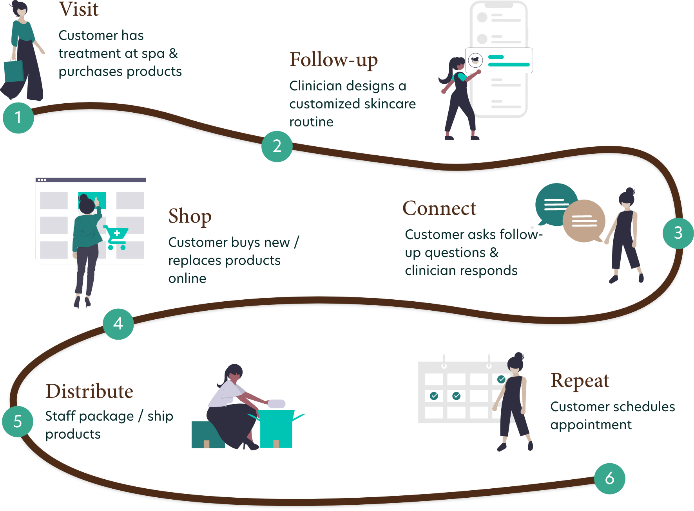
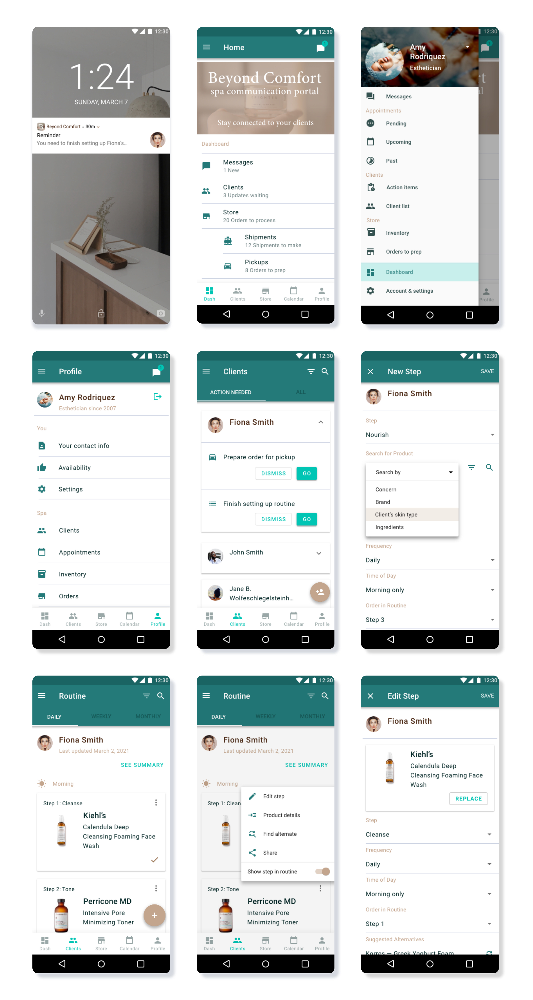
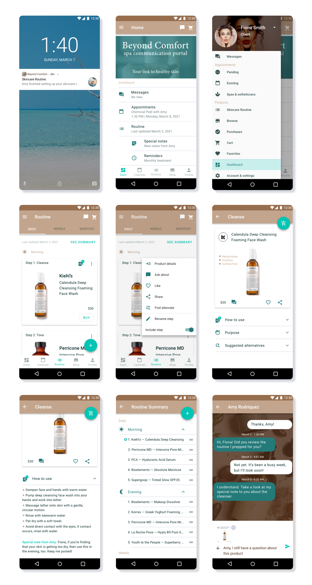
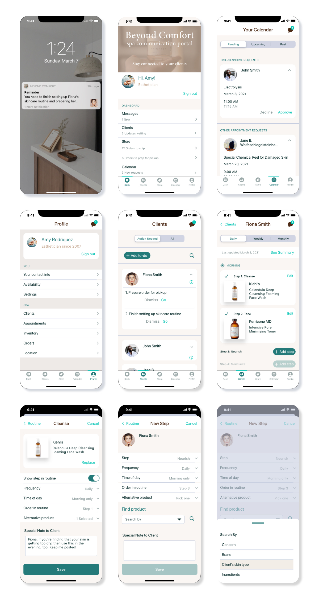
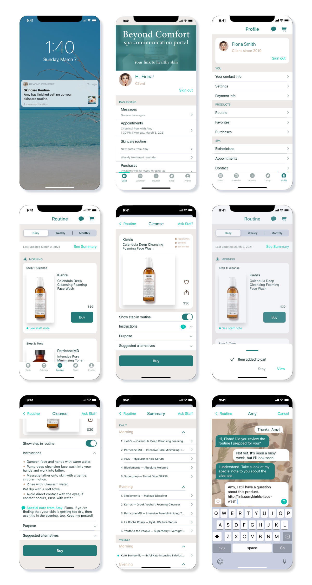

Skincare App
Ten years ago, I met Annie. She had recently graduated from esthetician school and was working for a challenging boss in a drab office in a basement. Today, she has a thriving business in a beautiful (above-ground!) spa. Her magnetic energy implies you can text her on a Sunday morning about how to use a serum she picked for you. Clients often want her to customize their skincare routines, too. Thus, with the wealth of customers that she has accrued, Annie struggles to balance client communication, scheduling, product orders, and one-on-one attention.
Below, I detail the app that I designed with these concerns in mind. For more examples of my work, see my Portfolio on Behance.
I started by identifying the key features that I wanted the app to include and reviewed other apps (described below). I then created user flows and a low-fidelity wireframe. Next, I designed a mid-fidelity wireframe that I tested on users. Then I settled on a style and finally, turned it into a high-fidelity wireframe.
User Flows
Staff
The dashboard enables staff to see their to-do list in a quick snapshot. For a client-by-client view of their to-do list, staff can view the Clients tab of the app. There, they can easily see action items for each client and delve into a client’s skincare routines, purchases, and other personal details. The user is channeled to other app sections to carry out activities such as approving client appointment requests, preparing purchases for shipment, or replying to direct messages. A given client can be viewed and addressed holistically. That said, staff can independently view all calendar details, messages, and the online store without digging into each client. My prototype focused on the skincare routine screens.
Clients
Similarly, the dashboard provides clients a snapshot of their activities and to-dos. After a preliminary visit to the spa (or virtual consultation), the client can follow her skincare routine, buy products as needed, make new appointments, and get help from her clinician. She can do other fun activities such as favorite and share products, edit her skincare routine, and check the details of her upcoming appointment. Not shown in these flow charts, are the Profile screens which have typical user data.
Research
I conducted a “rapid fire” review of other skincare apps to guide my process and ensure I wasn’t omitting essential features or simply replicating an app that already exists. Then I did a careful review of a select set of apps that had similar features to those that I had chosen: booking appointments, receiving and providing skincare guidance, and shopping for products.
I also conducted user testing.
I imagined a tool that could help Annie systematically juggle her small business — separating it from her personal life, yet still providing the personal, supportive touch fueling her business. In essence, an app for small spas and their devoted customers. Enriching existing customer relationships is known to be more lucrative in the long run than luring in the “off customer” who needs a quick indulgence. I embarked to design an app that could address spa staff and client needs.
The Loyal Customer & Caring Clinician
Below are the high-fidelity screens that I designed.
Android
Staff Screens
Client Screens
iOS
Staff Screens
Client Screens
Check out the interactive prototypes.
Challenge: see if you can toggle between staff and client!
Designer's Rollercoaster
A seasoned interviewer and facilitator, I considered myself well-practiced at data collection. The three testers for whom I facilitated the process were confused. Yet, my fourth and fifth testers, left to their own devices, provided overwhelmingly positive feedback. What happened?
Patience: the Forgotten Virtue
I reflected on the variables that could have contributed to the contrasting experiences. I then followed-up with a few of the testers; my facilitation approach appeared to be the most influential issue. Unfortunately, I had expected testers to immediately understand the app structure and squeeze themselves into the shoes of apparently un-relatable potential users and carry out tasks that I assigned them. We can’t expect our users to know exactly what they will find behind each curtain and selecting the right testers matters. Further, discovery can be enjoyable! Testers agreed that once they understood the purpose of and relationships between screens, they felt confident that they could achieve the goals asked of them.
Tempering Expectations
Compounding my inelegant facilitation approach, I had asked users to test the app from two perspectives (client and staff). It led to a layered type of confusion. Testers needed time to digest goals that we, as facilitators, are asking them to assume. Moreover, asking users to switch their perspectives and needs mid-testing is a tall order.